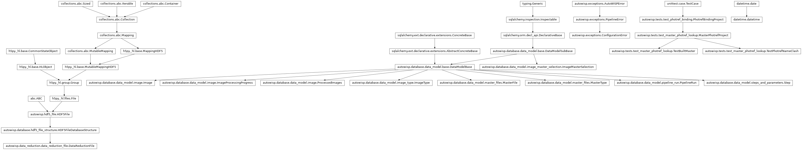
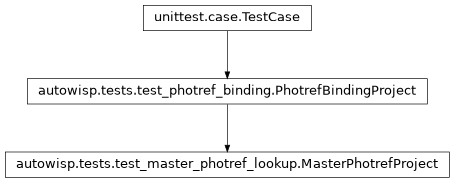
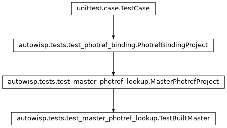
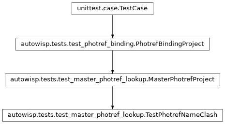

autowisp.tests.test_master_photref_lookup module
Class Inheritance Diagram

Tests for fitting new images against the master their photref built.
The engine gives each fit_magnitudes batch the master photometric
reference built from the batch’s single photometric reference, found through
the progress of the batch that built it: the images of that progress are
bound to the reference. A reference is not registered if its masters would
be named like those of another.
The project is the one of test_photref_binding, with more single
photometric references next to its ref.
- class autowisp.tests.test_master_photref_lookup.MasterPhotrefProject(methodName='runTest')[source]
Bases:
PhotrefBindingProject
Adds writing and registering masters, holding no tests itself.
- class autowisp.tests.test_master_photref_lookup.TestBuiltMaster(methodName='runTest')[source]
Bases:
MasterPhotrefProject
Each batch is given the master its own single photref built, if any.
ref1built a master twice, the first of which was disabled, along with a statistics file.ref2built one.ref3built none, though its batch was processed, so has a progress. A master registered outside of any batch was built from no reference the engine knows of.- classmethod _add_progress(db_session, image_name)[source]
Record a fit_magnitudes batch of the image in R, return its ID.
- test_default_names_tell_photrefs_apart()[source]
References of one target, channel and exposure time.
- class autowisp.tests.test_master_photref_lookup.TestPhotrefNameClash(methodName='runTest')[source]
Bases:
MasterPhotrefProject
Under formats naming masters by target, channel and exposure time.
Of the candidates, only the one matching the registered
refin all three would have its masters named likeref’s.